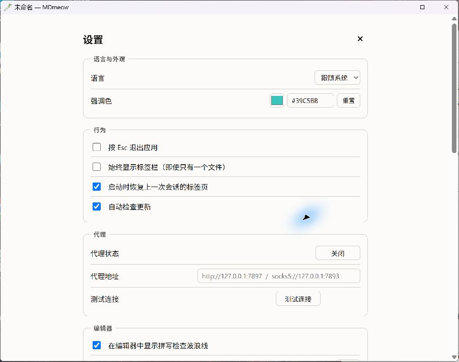
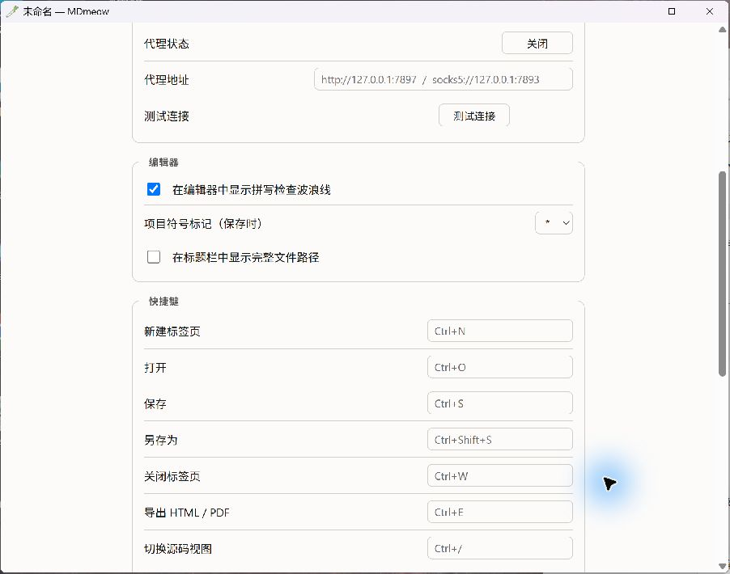
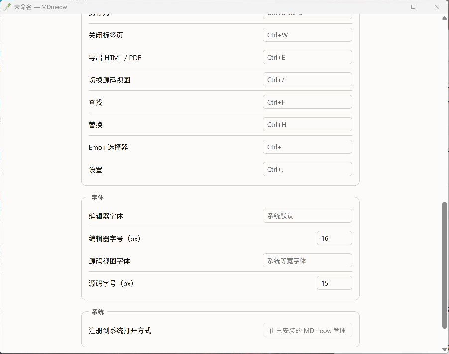

MDmeowMARKDOWN · MADE SIMPLE
#39C5BB一点薄荷，一点喜欢。点击下载
✧
✳
01 / SMALL APP, BIG LOVE
轻轻打开，
好好写字。
你的 Markdown 小伙伴，
轻盈得刚刚好。
4.3MB
小小占用 · 大大喜欢 ♡0% CPU来自本次任务管理器截图
小体积的快乐，有图为证 ↗

留更多空间，给你的灵感。meow ~

轻一点，再轻一点 ♡
截图时的进程读数；实际占用随文档与运行环境变化。
02 / MAKE IT YOURS
喜欢的颜色，
每天都见面。
#39C5BB
把一抹初音绿，
放进你的写作日常。
01
语言与外观多语言界面 · 自定义强调色
02
顺手的小习惯标签栏 · 恢复上次会话
MDmeow / 设置 · 外观与行为实机截图

是喜欢的颜色呀！02 / YOUR OWN RHYTHM
每一个习惯，
都有自己的位置。
快捷键、字体、字号，
让写作更合你的手。
Ctrl + SCtrl + /Ctrl + E
写字这件事，要舒服～


03 / WORDS COME TO LIFE
写下的，
都好看。
从标题到表格，
给文字清楚的层次。
表格与排版
MDmeow一点轻盈，一点可爱。Markdown_综合渲染测试文档.md正在准备文档…
Markdown → Miku Cream让灵感，自在生长。 ♡
04 / READY WHEN YOU ARE
所见即所得，
打开即工作。
让排版自然发生，
让灵感落在眼前。
MDmeow #39C5BB
下载 MDmeow
进入 GitHub Releases 下载平台
选择适合你的版本，开始写作。
选择适合你的版本，开始写作。
现在，就写下第一行吧 ♡